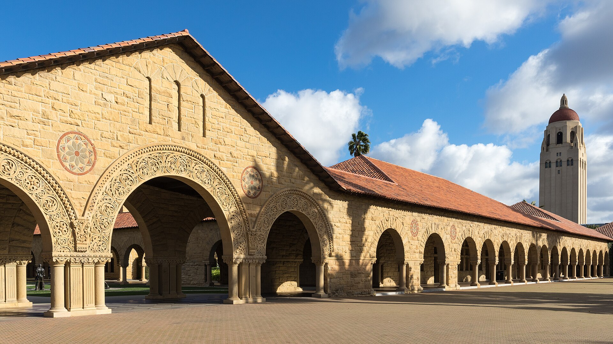

Как устроено поступление в колледж в США: SAT/ACT, Common App и процесс подачи заявки
Поступление на программу бакалавриата в США — это поэтапный процесс: стандартизированные тесты (SAT или ACT), единая заявка (Common App), эссе, рекомендательные письма и сроки подачи. Это справка объясняет процесс для семей мигрантов и диаспоры — только на основе проверенных фактов, а не как совет. Точные правила и сроки различаются по колледжам и меняются каждый год, поэтому всегда проверяйте официальную страницу колледжа.

Поступление на программу бакалавриата (четырёхлетнее высшее образование) в США — это многоэтапный процесс, обычно охватывающий последние два года старшей школы. Для семей диаспоры он резко отличается от системы, построенной на одном вступительном экзамене: здесь результат теста — лишь одна часть, а остальное складывается из истории оценок, эссе, рекомендательных писем и списка занятий. Ниже процесс объясняется по порядку, на основе только проверенных данных. Эта статья не даёт советов и подчёркивает, что точные правила различаются по колледжам и меняются каждый год (Источник: Wikipedia — SAT; Wikipedia — Common App).
Общий график
Процесс поступления обычно начинается в 11-м классе (junior year): ученики сдают SAT или ACT, набирают опыт внеклассной деятельности и лидерства, составляют список колледжей и договариваются с учителями о рекомендациях. В 12-м классе (senior year) дорабатываются эссе, заявки подаются осенью, а решения приходят весной. Обычные решения часто объявляются в конце марта — апреле, а принятый ученик подтверждает своё место в одном колледже, внеся депозит до 1 мая (национальный срок ответа) (Источник: CollegeData — Application deadlines).
Типы сроков подачи
Подать заявку можно несколькими способами. 'Early Decision' (ED) — обязывающий вариант: если вас приняли, вы обязаны поступить в этот колледж и отозвать остальные заявки; срок обычно около 1 ноября, решение — в середине декабря. 'Early Action' (EA) — необязывающая ранняя заявка: вы подаёте рано (около 1 ноября), получаете ответ в декабре–январе, но решить можете позже. 'Regular Decision' (RD) — обычный срок: обычно подаётся около 1 января, решение — в конце марта — апреле. Некоторые крупные государственные университеты используют 'rolling admission' — единого срока нет, заявки рассматриваются по мере поступления (Источник: CollegeData — Application deadlines; Wikipedia — College admissions in the United States).

Стандартизированные тесты: SAT и ACT
Есть два основных стандартизированных теста. SAT проводит организация College Board; с марта 2024 года в США он полностью цифровой, сдаётся в приложении 'Bluebook' и адаптивный — сложность второй части зависит от первой. Общий балл SAT — от 400 до 1600, из двух разделов — 'Чтение и письмо' и 'Математика', каждый оценивается в 200–800 баллов. ACT проводит организация ACT; итоговый (composite) балл — от 1 до 36. В обновлённом ACT обязательные основные разделы — английский язык, математика и чтение; разделы по естественным наукам (science) и письму необязательны и не влияют на итоговый балл (Источник: Wikipedia — SAT; ACT.org).
В последние годы многие колледжи перешли на политику 'test-optional', означающую, что абитуриент сам решает, подавать ли балл SAT или ACT; отсутствие балла не идёт автоматически во вред заявке. Эта практика широко распространилась во время пандемии 2020 года. При этом ряд избирательных университетов восстановил требование теста в 2024–2025 годах. Политика различается по колледжам и меняется каждый год, поэтому текущее требование конкретного колледжа всегда нужно проверять на его официальной странице (Источник: Wikipedia — College admissions in the United States).
Единая заявка: Common App
Большинство колледжей позволяют отправить одну заявку сразу во многие из них через 'Common Application' (Common App); членами этой платформы являются более 1000 колледжей. В Common App входят: личное эссе (personal statement) — текст до 650 слов на одну из нескольких тем, отправляемый одинаково во все колледжи; список внеклассных занятий и опыта работы; рекомендательные письма, обычно от школьного советника (counselor) и одного или нескольких учителей; а также официальная выписка оценок (transcript) и средний балл (GPA), отправляемые школой. Есть и альтернативная платформа 'Coalition for College' (сейчас работает через Scoir), охватывающая около 150 колледжей (Источник: Wikipedia — Common App; Wikipedia — Coalition for College).
Типы высших учебных заведений
Есть несколько видов заведений. 'Community college' — двухлетний колледж, дающий степень 'associate', обычно с открытым приёмом и дешевле. Из него можно перевестись в четырёхлетний университет — путь 'transfer', регулируемый соглашениями между колледжами (articulation agreements). В Калифорнии, например, есть путь из community-колледжа в систему UC или CSU. Четырёхлетние университеты могут быть государственными (public, финансируются штатом) или частными (private) (Источник: California State University — Transfer; Wikipedia — Community college).
При составлении списка колледжей часто используют понятия 'safety', 'match' и 'reach'. 'Safety' — колледж, поступление в который очень вероятно (ваши баллы выше диапазона этого колледжа); 'match' (или target) — там, где ваши баллы близки к среднему показателю колледжа; 'reach' — избирательный колледж, куда поступить труднее. Консультанты обычно советуют составлять сбалансированный список из всех трёх (Источник: Wikipedia — College admissions in the United States).
Стоимость и финансовая помощь
Общая стоимость обучения (cost of attendance) резко различается от колледжа к колледжу. Финансовая помощь обычно начинается с подачи FAFSA (Free Application for Federal Student Aid) на сайте studentaid.gov. Эта тема подробно разобрана в отдельной статье, поэтому здесь упоминается лишь кратко (Источник: Federal Student Aid — studentaid.gov).
Внутренние и международные абитуриенты
Важное различие: граждане США и обладатели грин-карты (постоянные резиденты) подают заявку как 'внутренние' (domestic) абитуриенты и имеют право на федеральную помощь (грант Пелла, федеральные кредиты) через FAFSA. Международные студенты (по визе F-1) обычно должны подтвердить знание английского через тест вроде TOEFL или IELTS (точное требование устанавливает не виза, а каждый колледж); после зачисления колледж выдаёт форму I-20, с которой подают заявку на визу F-1. Студенты F-1 не имеют права на федеральную финансовую помощь (Источник: Federal Student Aid — studentaid.gov; U.S. Department of State — Student Visa).
Ещё один ключевой момент: государственные университеты берут с резидентов своего штата гораздо меньшую плату за обучение (in-state tuition). Чтобы получить резидентство штата, обычно нужно непрерывно жить в штате (часто около 12 месяцев) до зачисления, плюс намерение остаться; правила различаются по штатам. Студенты из других штатов и международные платят значительно больше (Источник: California State University — Residency).
Почему это важно
Заблаговременное понимание процесса поступления в колледж в США помогает семьям диаспоры планировать, не пропускать сроки и расширять возможности ребёнка. Эта статья опирается только на проверенные источники; она не даёт советов или гарантий. Тесты, сроки, политика test-optional и правила резидентства меняются каждый год — за самой точной информацией всегда обращайтесь к официальной странице колледжа, College Board, ACT и studentaid.gov.